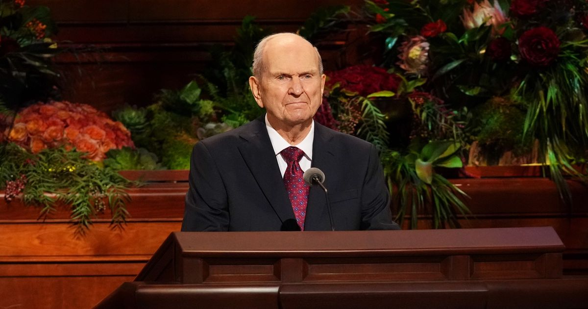

Latter-day Saints build temples because they believe God has commanded His people to create sacred places where worshippers make covenants, receive ordinances, learn of Jesus Christ, and seek blessings that extend beyond death.
Temples are not the same as ordinary Sunday meetinghouses. This page summarizes Latter-day Saint belief; official Church temple resources are linked below.
Watch and study
See the purpose behind the building
Begin with Temples Through Time, which brings together scholars and people of different faiths to discuss ancient and modern temples. Listen for both shared interests and the distinct Latter-day Saint understanding explained on this page. The significance of a temple is best understood through what worshippers believe happens there.
Doctrine and Covenants 109:1-15 records the Kirtland Temple dedication prayer in March 1836. The prayer asks the Father to accept the house in the name of Jesus Christ and seeks learning, holiness, and His presence. Study and faith appear together in verses 7 and 14.
Continue through verses 21-23. The prayer includes repentance and restoration to blessings, then asks that servants leave the temple strengthened to share the gospel. This provides a pattern to consider: worship prepares people to go outward in service. It does not make the building an escape from the responsibilities of daily life.
A House of the Lord
A dedicated temple is regarded as a holy house of the Lord. Latter-day Saints connect modern temples with a scriptural pattern of sacred places where God teaches, covenants with, and blesses His people.
Covenants and Ordinances
A covenant is a sacred commitment between a person and God. An ordinance is a sacred religious act performed by priesthood authority. The Church explains these terms in Why Ordinances and Covenants Matter. Temple worship includes ordinances that are not performed in ordinary chapels. The endowment teaches God’s plan and includes covenants to follow Jesus Christ. Temple sealings unite husbands and wives and connect children to parents with the promise that family relationships can continue eternally when covenants are faithfully kept.
Jesus Christ Is Central to Temple Worship
Temple worship is intended to point disciples toward the Savior. The ordinances teach about God’s plan of salvation, the Atonement of Jesus Christ, obedience, sacrifice, consecrated discipleship, and the hope of returning to God through Christ.
Why Are Some Temple Ceremonies Limited to Prepared Members?
Before dedication, temples often hold public open houses. After dedication, participation in temple ordinances is reserved for Church members who have prepared spiritually and are recommended by local Church leaders. Latter-day Saints describe this as sacred preparation rather than secrecy: the covenants are treated as solemn commitments requiring readiness.
What About People Who Have Died?
Latter-day Saints believe God provides every person a fair opportunity to receive the gospel. In temples, living members may receive ordinances by proxy for deceased ancestors. Those ordinances are understood as an offer, not a forced conversion; the deceased retain agency to accept or reject them.
When Temple Questions Are Personal
For some readers, temple teachings bring hope; for others, they bring questions about a loved one, divorce, or circumstances that did not turn out as expected. A short explanation of sealing cannot resolve every individual situation. The official temple sealing overview explains the teaching, while a trusted Church leader can help with questions about your own participation.
If the subject is tender, you may prefer to begin with families and belonging or support through divorce. There is no need to share private family details here in order to keep learning.
Understand the Connections Behind Temple Worship
Covenants grow from a relationship with God
Mosiah 18:8-10 describes baptismal commitment in terms of bearing burdens, offering comfort, and serving God. These are baptismal teachings, not a description of the temple ceremony. They provide a familiar starting point for understanding why a covenant is meant to shape ordinary conduct as well as worship.
Why do Latter-day Saints speak of restored keys?
Doctrine and Covenants 110:1-10, 13-16 records a vision in the Kirtland Temple and the appearance of Elijah. Latter-day Saints connect this account with restored authority for temple work. Here keys means authority to direct particular priesthood work, not a physical object. The passage belongs to the Church's Restoration account and should be read in that setting.
Service reaches beyond the living
Read Doctrine and Covenants 138:30-35, 58-59 to connect temple service with teaching among the dead. Proxy describes one person performing an ordinance on behalf of another. It does not mean someone else's faith or willingness is decided for them. Keep the official temple resources beside this study when exploring the Church's explanation.
How could this affect life outside the temple?
Reflect on whether a promise to follow Christ is changing how you treat someone today. Service, honesty, and care for family and neighbors give a practical setting for considering covenant discipleship. No visitor needs to disclose their membership or temple status to use this study.
Watch and study
Covenant worship and joy in Christ
The Church's public overview of the endowment explains how temple instruction relates the Creation, Fall, and Atonement to God's plan. It also describes covenants involving obedience, sacrifice, gospel living, chastity, and consecration. Read those explanations directly so that the terms have more meaning than a list.
The same overview encourages participants to learn over time and says they need not understand everything on their first visit. Preparation includes learning what one is committing to and choosing that commitment prayerfully. A quiet or unfamiliar experience does not need to be compared with someone else's description.
In the accompanying October 2021 message, The Temple and Your Spiritual Foundation, President Russell M. Nelson connects temple covenants with a foundation in Jesus Christ. His complete address also discusses learning through continuing revelation. As a personal reflection, ask how temple learning might deepen gratitude for Him. Joy can be expressed through patient service, keeping a promise, or extending care to a family member. These are practical invitations, not a measure of another person's spiritual worth.

A study you can carry into the week
These focusChrist prompts are invitations for personal reflection.
Understand a word
Choose covenant, ordinance, endowment, or sealing. Read its explanation in the official resources and put it into your own words. Ask what the teaching says about the relationship between God and the person making the commitment.
Connect worship and conduct
Choose one ordinary responsibility that could receive greater care: your use of time, honesty at work, attention to family, or service to a neighbor. Consider what covenant discipleship would look like in that specific setting this week.
Prepare an honest question
If you are preparing to attend, bring questions about preparation and participation to your bishop or branch president. If you are simply learning, use the public introduction and source pages freely. This study does not require you to disclose your membership or personal circumstances.
Remember an individual
Consider learning one accurate detail about an ancestor or preserving a family memory with permission. Let your interest begin with a person's life and relationships. The section on service for the dead explains the belief behind proxy ordinances and the importance of agency.
Bring a passage and a specific question to Ask, then check the response against the linked original sources.
Official Sources and Further Study
Where would you like to go next?
Read about life after death
Understand the beliefs behind temple service for those who have died.
Explore family relationships and belonging
Consider eternal hopes alongside the varied realities of family life now.
Watch an introduction to temple worship
Hear an official explanation of temples, then continue with resources about listening and belonging at home.